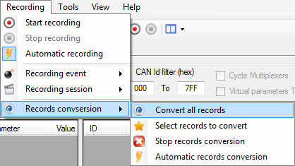

The ‘Record conversion’ sub-menu of the ‘Recording’ menu of the main menu strip contains all data file conversion commands.
As far as the manual conversion, two options are available. It is possible to either convert all logging files at once or to manually select in a list files that have to be converted.

Click the ‘Convert all records’ menu to convert all data files by a single click.
To make your own selection of files to convert, click the ‘Select record to convert’ menu.
The file selection form shows up.

Check the box of all files that you want to convert and then click the ‘Convert’ button once you are ready to launch the conversion process.
Created with the Personal Edition of HelpNDoc: Free HTML Help documentation generator